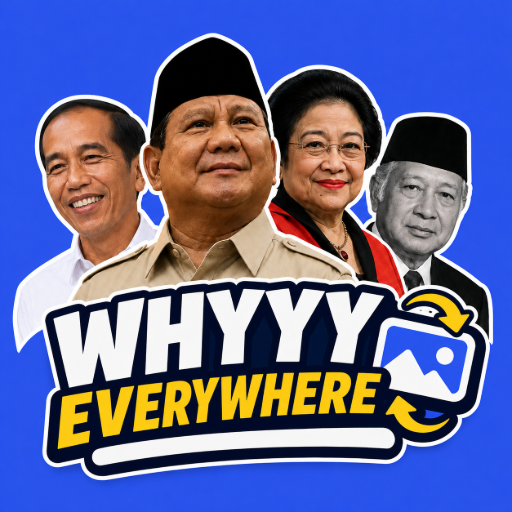
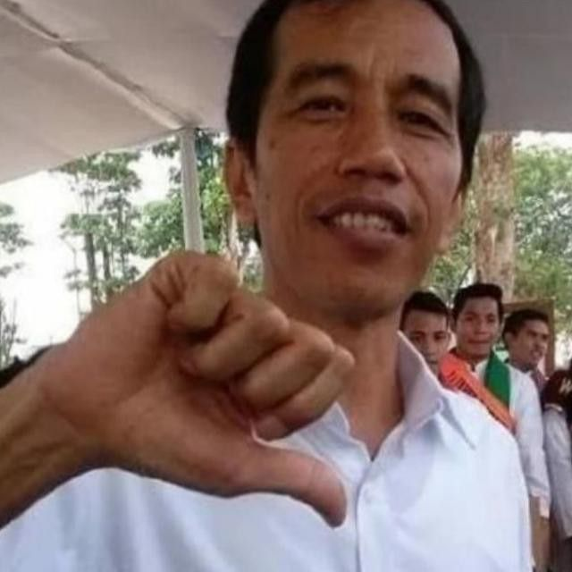

Whyyy
Everywhere
OFF
Pilih gambar untuk mulai.
Prabowo Gemoy

Jokowi Tydack Santai
Megawati Muacchhh
Soeharto Ngudud
✔
Hidupkan Semua
Rotasi Prabowo, Jokowi, Megawati, Soeharto
Created By:
Wafa Rifqi Anafin